1. Asus Eee Pad Transformer Prime(32 Gb)
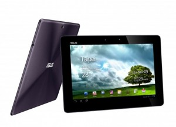
Asus Eee Pad Transformer Prime is one of the best android tablets available so far. Its the first device featuring the Nvidia Tegra 3 Quadcore processor which has a lot of improvements over its predecessor. The Build quality is great and feels higher than iPad2. he resolution of the screen is the best out of any current tablet, and can be bright enough that it is useable outdoors in sunlight. with the accessory dock/ Keyboard, it remains in one of the top positions in Android Tablet space.
2. Sony Tablet S-32 GB
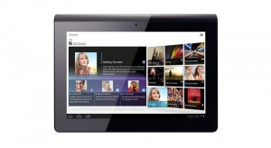
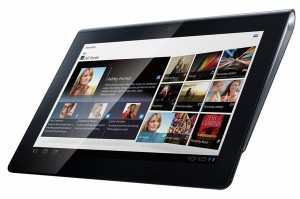
The Tablet S features a 9.4-inch LED-backlit TruBlack display giving more vibrant colors and deep blacks. Although the Sony S1 tablet is based on Android Honeycomb, Sony introduced a few very unique features and customizations. An interesting feature is that the tablet works as a universal remote control, not only to Sony TVs but also electronics of other brands. Another feature Sony has implemented in this device is DLNA (Digital Living Network Alliance) for streaming contents directly to DLNA capable Devices. Considering that newer Consumer Electronic Appliances electronics are becoming "DLNA certified" as a standard now, this can be considered as a great thing
3. HTC Flyer
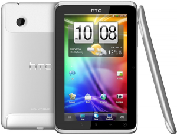
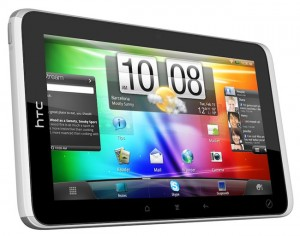
HTC Flyer is provided with 1.5 Ghz Qualcomm Processor which is pretty fast. Unlike another tablets, it comes with a stylus/ Digital pen. the screen has an active digitizer which means it can sense pressure also, enabling the use of a stylus. The only drawback is that the tablet comes with Android Gingerbread OS. The HTC also features a new version of HTC Sense UI which is highly customizable.
4. Acer Iconia Tab
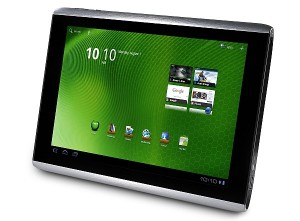
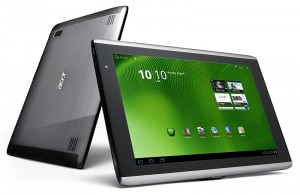
The Acer Iconia Tab A500 runs on Android HoneyComb with Acer UI on a 10.1 inch screen. It features front and rear cameras and a full size USB and HDMI ports. The resolution of the screen is standard (800 x 1280 pixels). The device is powered by a 1Ghz NVIDIA Tegra Dualcore processor. Iconia is thick and heavier than other tablets but comes with a reasonable price.
Key Features:
Display: 800 x 1280
pixels, 10.1 inches
OS: Android OS, v3.0
(Honeycomb)
CPU: Dual-core 1 GHz
NVIDIA Tegra
5. Thoshiba Thrive
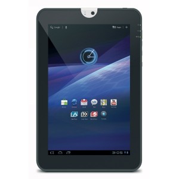
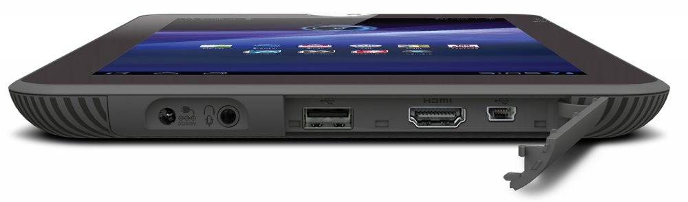
Thoshiba thrive looks to be a worthy competitor to the iPad and other tablets. the display is awesome with 10.1 inch high resolution LED-Backlit screen. Nvidia Tegra 2 processor gives the device high performance for multitasking and HD entertainment. The full size USB port, HDMI and mini USB port gives the user all the computing freedom they want.
Key Features:
Display: 800 x 1280
pixels, 10.1 inches
OS: Android OS, v3.1
(Honeycomb)
CPU: Dual-core 1 GHz
NVIDIA Tegra 2 Dual core
6. Samsung Galaxy Tab 10.1
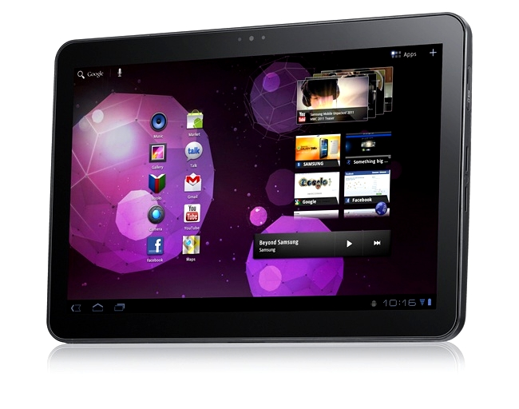
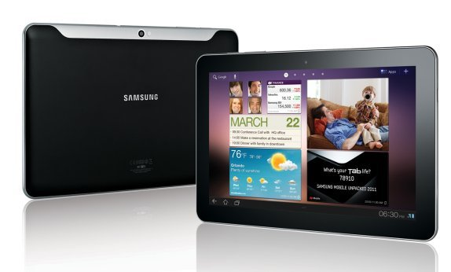
The original galaxy tab was first in the mainstreams of android tablets. Now samsung cames with the successor of the Galaxy Tab 7. This device looks very attractive and samsund claims that it is thinner than iPad2. It runs on Android HoneyComb 3.0 and is powered by 1Ghz NVIDIA Tegra 2 Dual Core processor and 1GB RAM. The build quality of the device is great just like other samsung gadgets. It has a black glossy finish in the front and Matte finish at the rear side.
Display: 800 x 1280
pixels, 10.1 inches WXGA TFT LED Display
OS: Android OS,
v3.1 (Honeycomb)
CPU: Dual-core 1
GHz NVIDIA Tegra 2 Dual core, 1 GB RAM
7. Motorola Xoom 2
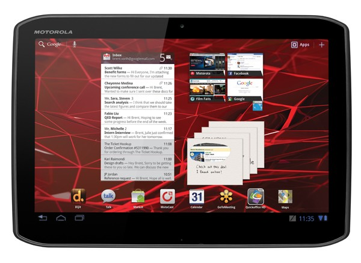
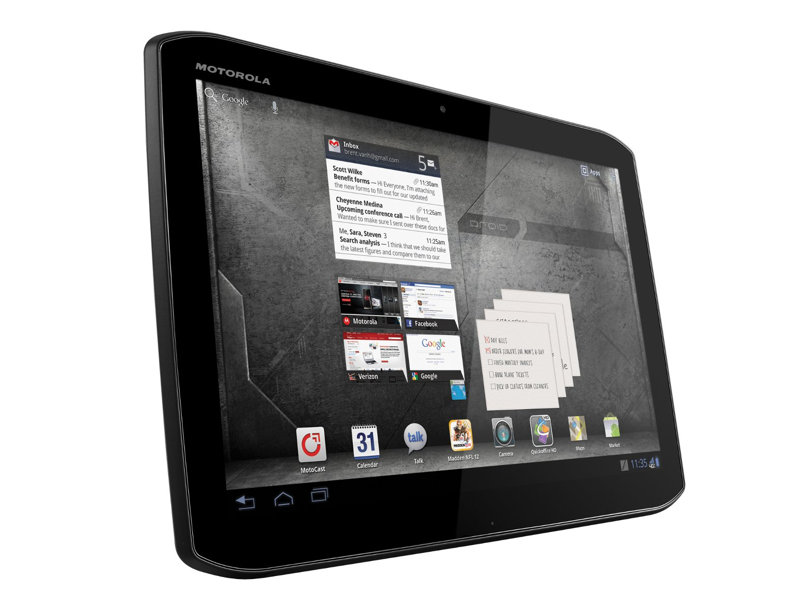
The Motorola Xoom 2 is light, slim and attractive in looks. The powerful processor makes multitasking, a wonderful experience in Xoom2. The 10.1 HD screen delivers a stunning display. The 1.2 GHz superfast processor and powerful Android HoneyComb makes the Motorola Xoom one of the fastest multitasking tablets.
Key Features:
Display: 800 x
1280 pixels, 10.1 inches with Corning Gorilla Glass
OS: Android OS, v3.1
(Honeycomb)
CPU: Dual-core 1
GHz NVIDIA Tegra 2 Dual core
{kind=link}
8. LG G-Slate
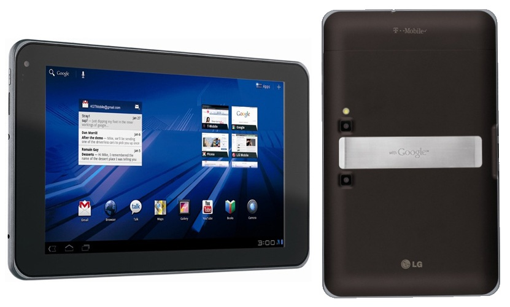
This 8.9 inch Tablet is a highly innovative product. The device is equipped with a 3D camera and 3D screen. The powerful of NVIDIA Tegra2 dualcore processor enables us to watch the supported contents in 3D with using the Glasses included. The 8.9 inch 3D capable HD wide screen and HDMI port will satisfy almost all kinds of users.
Key Features:
Display: 1280 x
768px 8.9 inch 3D capable multitouch display
OS: Android OS, v3.0
(Honeycomb)
CPU: Dual-core 1
GHz NVIDIA Tegra 2 Dual core
5.0 MP rear camera with LED flash and 3D recording
9. Lenovo IdeaPad K1
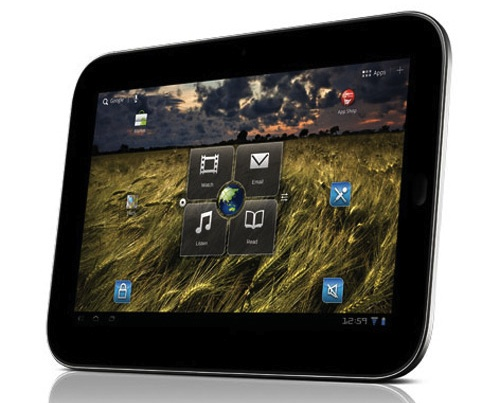
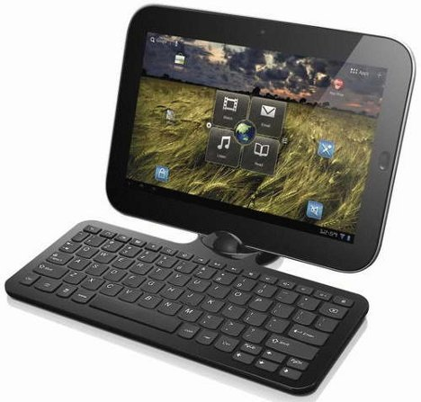
{kind=link}
Lenovo IdeaPad K1 packs all the features of a HoneyComb Tablet. Unlike others, this device comes with a lot of preloaded apps. This device is also powered by the extremely powerful NVIDIA Tegra 2 Dualcore processor and runs on Android 3.1 Honeycomb Operating system. The 10.1? LED Backlight WXGA display delivers vibrant crisp images. The absense of a full USB and HDMI port may disappoint the user's computing freedom.
Key Features:
Display: 10.1?
LED Backlight WXGA (1280-800) LCD
OS: Android OS, v3.1
(Honeycomb)
CPU: Dual-core 1
GHz NVIDIA Tegra 2 Dual core
10. Kindle Fire
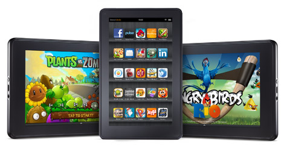
As a Tablet Kindle fire is a failure. Rather than a tablet, its a device designed to deliver amazon contents to people. The 7 inch multitouch screen with antireflective treatment gives more importance to reading than watching other multimedia contents. Kindle fire may disappoint you as a multimedia Android Tablet, But the reader app is excellent and gives you a wonderful reading experience. Summing up, Kindle fire is an inexpensive all-in-one entertainment device.
Key Features:
Display: 7inch 1024 x 600 ( 169 ppi ) Multitouch TFT screen
with Anti-Reflection Treatment
OS: Android OS, v2.3
Gingerbread
CPU: Dual-core
Processor